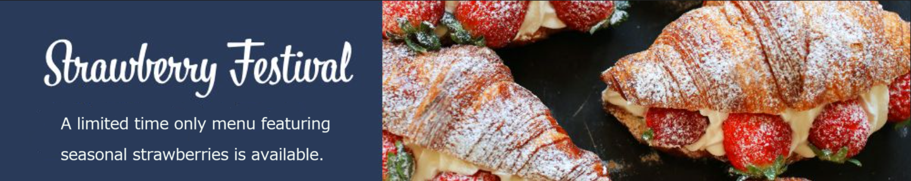

A cup of coffee, a relaxing and peaceful experience like that of a whale swimming leisurely. With Lake Ontario in front, hills in the back, and wheat fields nearby, this small café with its laid-back atmosphere invites you to take a break from everyday life and enjoy a moment of your own accord.
News
- From Wednesday, July 13 to Wednesday, July 20, we will be closed for the evening hours as we will have a stall at the Japan Festival. We will be selling tarts, quiches, and coffee at the spring festival.
- Saturday, June 25, we will be hosting a live performance by the acoustic guitar duo "PICNIC" at 6:00 pm Admission is 15 CAD and includes one drink.
- Wednesday, June 1, will be the World Coffee Tour to celebrate KUZIRA CAFE's 10th anniversary. We will brew 10 kinds of coffee with carefully selected beans from all over the world. Please enjoy tastes that are usually hard to find.
- Sunday, May 1, we renewed our website with the cooperation of Hidetoshi!
Opening Hours & shop-info
| Address | 120 Kuzira Avenue K1N 1W5（Map） |
|---|---|
| Phone Number | (416) 111-1111 |
| Opening Hours |
|
| Reservations | Reservations can be made by phone or by filling out the inquiry form. Please let us know the date, time, and number of people you would like to reserve. Please note that it may take some time to make a reservation from the form. |